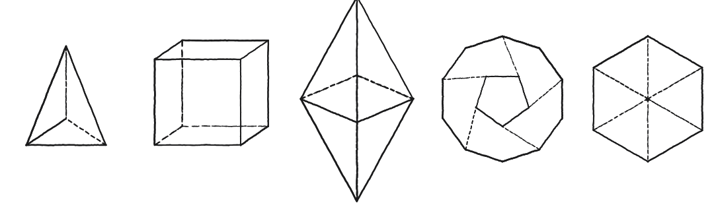
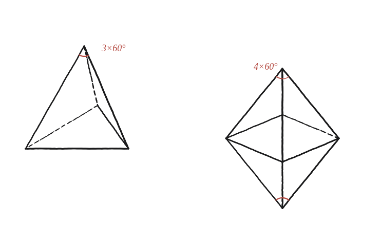

Quins són els cinc poliedres regulars?

La pregunta no és "quins", és "per què només aquests"
Els cinc noms —tetraedre, cub, octaedre, dodecaedre, icosaedre— es memoritzen fàcilment. El que cal explicar és per què la llista s'acaba exactament aquí: per què no existeix, per exemple, un poliedre regular fet de set triangles equilàters ajuntats a cada vèrtex.
La condició que ha de complir un vèrtex
Perquè un vèrtex "tanqui" en tres dimensions —perquè les cares que hi conflueixen puguin doblegar-se cap amunt i formar un cim en comptes de quedar-se planes— calen almenys tres cares en aquell vèrtex, i la suma dels seus angles hi ha de ser estrictament menor que 360°. Si sumessin exactament 360°, les cares quedarien esteses en un pla, sense cap doblec possible; si sumessin més, ni tan sols es podrien col·locar totes al voltant del vèrtex sense superposar-se.
Aquesta única condició —tres cares o més, angles per sota de 360°— aplicada a cada polígon regular possible és la que retalla la llista de candidats a una mida finita.
Comptar totes les combinacions vàlides
Recorrem els polígons regulars de menys costats a més, comprovant quantes còpies en caben en un vèrtex sense arribar a 360°:
Amb triangles equilàters (60° cadascun): 3 en fan 180°, 4 en fan 240°, 5 en fan 300° — les tres combinacions són vàlides, perquè totes queden per sota de 360°. Amb 6 s'arriba exactament a 360°: la figura queda plana, ja no tanca cap sòlid.
Amb quadrats (90°): només 3 caben (270°); amb 4 ja s'arriba a 360° exactes.
Amb pentàgons regulars (108°): només 3 caben (324°); amb 4 ja se superarien els 360°.
Amb hexàgons (120°): 3 sols ja en fan 360° exactes — cap combinació funciona. I com més costats té el polígon, més gran és el seu angle intern, de manera que la situació només empitjora: cap polígon de sis costats o més pot donar-hi cap combinació vàlida.
En total, doncs, exactament cinc combinacions (angle, nombre de cares per vèrtex) superen la prova: 3, 4 i 5 triangles; 3 quadrats; 3 pentàgons. Cadascuna es correspon amb un dels cinc sòlids: el tetraedre (3 triangles per vèrtex), l'octaedre (4 triangles), l'icosaedre (5 triangles), el cub (3 quadrats) i el dodecaedre (3 pentàgons).

Una llista completa, però amb dues meitats
Val la pena no confondre dues coses que semblen la mateixa afirmació però no ho són. El comptatge anterior demostra que no pot haver-hi cap sisè poliedre regular: qualsevol altra combinació de polígon regular i nombre de cares per vèrtex arriba o supera els 360° i, per tant, no tanca cap figura tridimensional. Això acota la llista per dalt.
Però acotar la llista per dalt no demostra per si sol que les cinc combinacions es puguin construir de debò —que els polígons, un cop plegats, arribin realment a tancar-se en un sòlid complet, en comptes de quedar oberts per l'altra banda per molt que cada vèrtex individual sigui vàlid. Aquesta segona meitat de l'argument, aquí, la donem per resolta per la via més directa possible: els cinc sòlids existeixen —es poden construir, tenir a la mà, i comptar-los les cares una per una— cosa que en confirma la realitzabilitat sense necessitat d'un argument geomètric addicional.
Hi ha exactament cinc poliedres regulars perquè només cinc combinacions (polígon regular, nombre de cares per vèrtex) mantenen la suma d'angles en un vèrtex per sota de 360° —i les cinc, a més, es poden construir realment: tetraedre, octaedre i icosaedre (triangles), cub (quadrats) i dodecaedre (pentàgons).